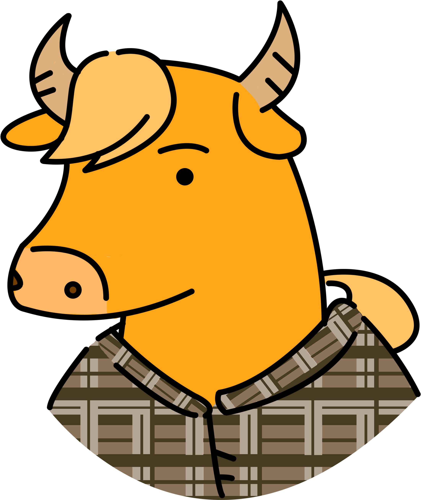

Welcome to Buffalo’s documentation!
{kind=link}
Buffalo is a fast and scalable production-ready open source project for recommendation systems. Buffalo effectively utilizes system resources, enabling high performance even on low-spec machines. The implementation is optimized for CPU and SSD. Even so, it shows good performance with GPU accelerator, too. Buffalo, developed by Kakao, has been reliably used in production for various Kakao services.
Buffalo provides the following algorithms:
All algorithms are optimized for multi-threading and some support GPU accelerators.
One of the best things about this library is a very low memory usage compared to other competing libraries. With chunked data management and batch learning with HDF5, handling a large-scale data, even bigger than memory size on laptop machine, is made possible. Check out the benchmarks page(https://github.com/kakao/buffalo/tree/master/benchmark) for more details on Buffalo performance.
Plus, Buffalo provides a variety of convenient features for research and production purposes, such as tensorboard integration, hyper-parameter optimization and so on.
Contents:
Indices and tables
References
- 1
Hu, Yifan, Yehuda Koren, and Chris Volinsky. “Collaborative filtering for implicit feedback datasets.” 2008 Eighth IEEE International Conference on Data Mining. Ieee, 2008.
- 2
Rendle, Steffen, et al. “BPR: Bayesian personalized ranking from implicit feedback.” Proceedings of the twenty-fifth conference on uncertainty in artificial intelligence. AUAI Press, 2009.
- 3
Mikolov, Tomas, et al. “Distributed representations of words and phrases and their compositionality.” Advances in neural information processing systems. 2013.
- 4
Liang, Dawen, et al. “Factorization meets the item embedding: Regularizing matrix factorization with item co-occurrence.” Proceedings of the 10th ACM conference on recommender systems. ACM, 2016.